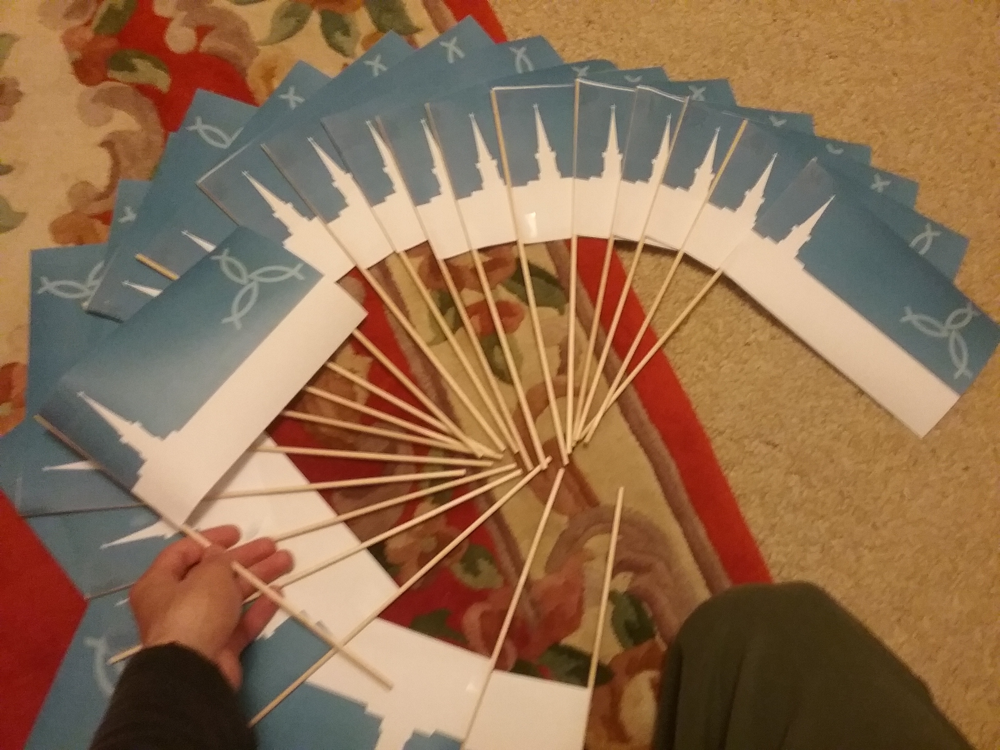

Bethel Flag
Explanation
I was volunteering at Bethel Church to help with Vacation Bible School (VBS) over the summer. I was telling a few of the kids about Sealand - a small (maybe) country with a population of 27 people. A few of the kids argued that "you can't just make a country with 27 people!" In response to this I told them if they could bring my 27 signatures I would prove them wrong and declare the church a sovereign nation. It took them a little over an hour to bring me 28 signatures. Looks like we were going to be a nation.
When I got home I quickly designed this flag and proceded to print out and build 40 tiny flags for the kids. The next day when I handed them out the kids were very excited about it. I also ended up making a huge flag that was a few feet across unfortunately I wasn't allowed to give it to the kids as it would "be an unwanted distraction." Oh well. In any case below is an image of around half of the flags I ended up making.
